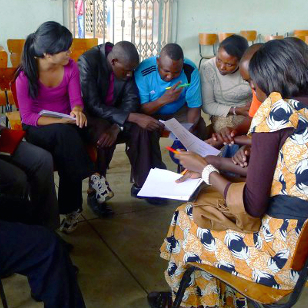

About Me
My name is Eugenia, and I work at the intersection of international development, anthropology, technology, and education. I like talking to and observing people, recording and sharing stories, and understanding why people do the things they do. I'm passionate about leveraging ethnographic insights to benefit people (especially marginalized and low-income communities), whether through thoughtful policy, product, or program design. Put simply, I believe that everyone should be taught to ask, "Why?".
Currently, I am studying for my MPA in Public and Nonprofit Management and Policy at New York University's Robert F. Wagner School of Public Service. I previously spent a few years working in informal settlements in Nairobi, Kenya with low-cost private schools, helping run and assess programs. I've conducted research and worked across three continents and five countries, and spend my days musing over how to develop programs that best serve the needs of people all around the world.
I'm an ethnographer who believes in using my skills and experience for social impact. Whether it's understanding how to design an intervention in informal settlements or how marginalized women will respond to a particular product that could potentially benefit them, I work on things that make positive change. I combine my experience in traditional monitoring and evaluation with my ethnography and anthropology background to help companies and nonprofits gain a richer and deeper understanding of their target audience and impact.
Also an avid reader, obsessive tea drinker, passionate runner, devoted yogi, and dedicated meditator. Want to chat? I welcome e-mails about anything and everything.